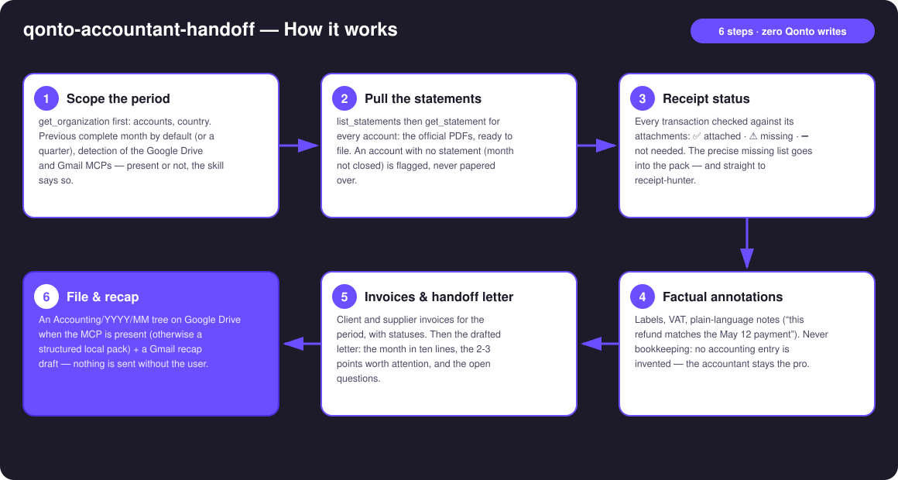
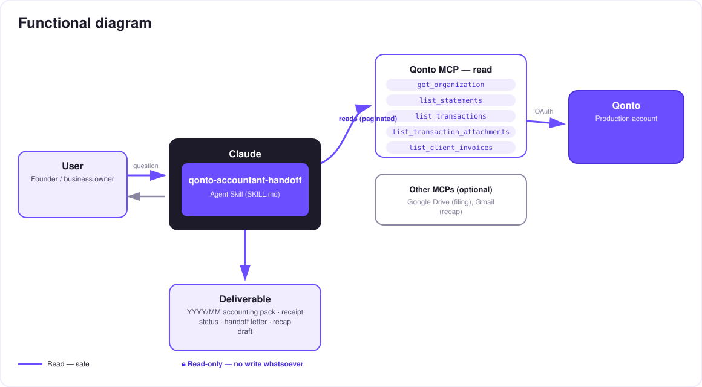

The monthly handoff to your accountant, minus the chore — the complete pack, prepared from your Qonto account.
Every month, the same message: "could you send me March's documents?" — followed by an evening of digging through emails and downloads. The skill builds the complete handoff pack straight from the Qonto account:
The period's official statements + every client and supplier invoice, with statuses.
Each transaction checked against its attachments: ✅ attached · ⚠️ missing · ➖ not needed — with the precise missing list.
Labels, VAT, factual notes ("this refund corresponds to…") — no accounting entry is ever invented.
The month in ten lines, the attention points, the questions; a YYYY/MM Drive tree + a Gmail draft.
Would someone use this on a Monday morning? It's literally the first Monday of the month.
| Prerequisite | Detail | Required |
|---|---|---|
| Qonto production account | Adapts to any organization — get_organization first, nothing hardcoded | ✅ |
| Country | Works for every Qonto country — statements, invoices and receipts are universal. Local tax remarks only when detected, never invented rules | ℹ️ detected |
| Qonto MCP connected | Official connector (claude.ai / Claude Desktop), OAuth login | ✅ |
| A closed month | Statements only exist once the month is over; in-progress month → partial pack, stated plainly | ℹ️ |
| Google Drive MCP | For the YYYY/MM filing tree — otherwise a structured local pack (markdown + CSV) | ⭕ optional |
| Gmail MCP | For the recap email draft to the firm — otherwise the letter stays in the pack | ⭕ optional |

qonto-receipt-hunteremitted_at vs settled_at) handled at month boundaries
Zero writes on Qonto: on the Qonto side, everything is a read — nothing to approve. The only two "writes" happen on the user's side: a folder filed on their Google Drive (announced first), and a draft in their Gmail — the user always hits send themselves. And the skill does not do the accounting: factual annotation only, the accountant stays the professional.
| Item | MCP source | Shape in the pack |
|---|---|---|
| Handoff letter | Drafted by the skill (from the data it read) | 00-handoff-letter — markdown + Gmail draft body |
| Bank statements | list_statements + get_statement | 01-statements — official PDFs per account |
| Client invoices | list_client_invoices | 02-client-invoices — list + statuses (paid / pending) |
| Supplier invoices | list_supplier_invoices | 03-supplier-invoices — list + statuses |
| Receipt status | list_transactions + list_transaction_attachments | 04-receipts-status — coverage table + missing list (CSV) |
| Annotated transactions | list_transactions (labels, VAT, factual notes) | CSV/markdown attached to the status |
| Output | Format | When |
|---|---|---|
| Conversation reply | Markdown tables: pack contents, coverage, missing list, the letter | Always — the baseline |
| Google Drive folder | Accounting/YYYY/MM/ tree: letter, statements, invoices, receipt status | When the Drive MCP is detected — filing announced first |
| Gmail draft | Recap email to the firm, letter as body, link to the folder | When the Gmail MCP is detected — never sent by the skill |
| Local pack | Structured folder of markdown + CSV, described file by file | Without Drive/Gmail — forward it however you like |
The ≤ 3-minute demo attached to the PR walks through: the monthly chore → the pack building itself (statements, invoices, missing receipts listed) → the factual annotations and the letter → the Drive tree filling up + the Gmail draft → the local fallback. It runs live on a real production account.
| Idea | Effort | Note |
|---|---|---|
| Automatic chaining with qonto-receipt-hunter | Low | The missing list goes straight to the receipt chase before the handoff |
| qonto-monthly-close verdict embedded in the letter | Low | The closed month's quality check, as a badge |
| Normalized CSV export for the firm's software | Medium | The format changes, the facts don't |
| Start-of-month reminder (calendar MCP detected dynamically) | Low | Optional multi-MCP enrichment, in the spirit of the kickoff |
| Pack history + open-question tracking | Medium | March's question doesn't get lost again in June |
403 on list_cash_flow_categories → label fallback